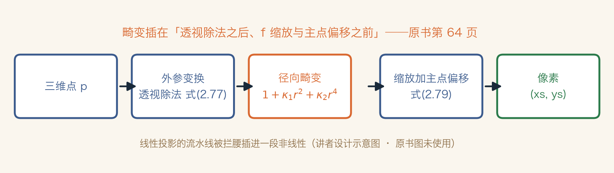
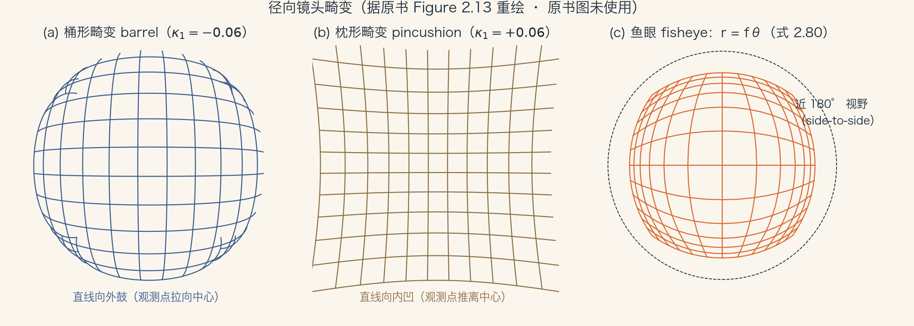
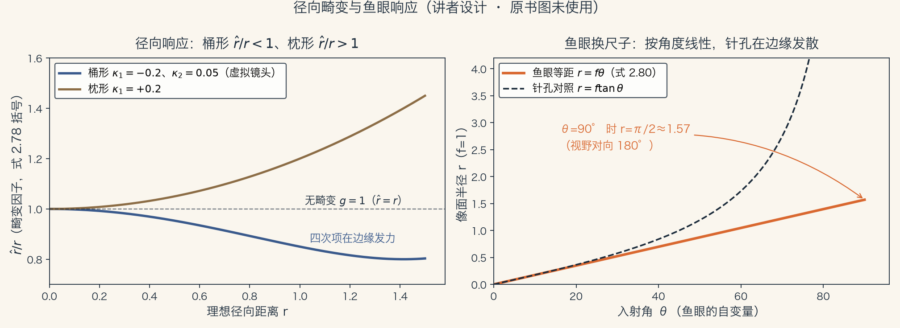
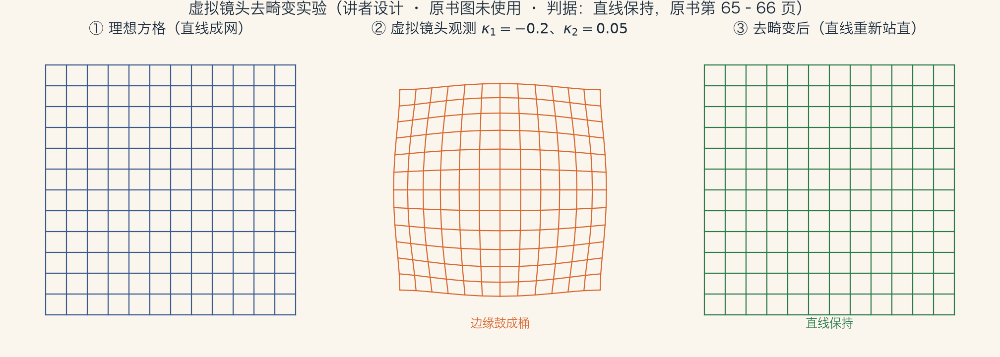

第 2 章 · 镜头畸变
镜头的谎言：直线为什么弯了
广角镜头把直线拍成弧线，叫径向畸变。
书上第 63 页叫它 visible curvature。
不校正，照片级重建会失准，拼接会发糊。
本集走三段：来源、模型、去畸变。
依据：原书第 63 页
三段路线
承诺与裂缝
κ₁、κ₂ 多项式模型
鱼眼与去畸变
正课第九集
01 / 16
导览 · 范围与切点
这一集吃 2.1.5 全节
上一集移交：畸变从第 63 页起，留给本集。
范围是书上第 63 到 66 页，到 2.2 节之前。
下一节光度成像从第 66 页起，归下一集。
旧工具：齐次坐标与标定矩阵 K。
依据：原书第 63–66 页
两件旧工具
齐次坐标：直线为何保持
K 矩阵：后半段出状况
范围：第 63–66 页
正课第九集
02 / 16
直觉 · 线性投影
针孔承诺：直线还是直线
线性投影：三维点乘矩阵，得到图像点。
齐次坐标上的线性运算，把直线映成直线。
书上第 63 页说，这是自然结果。
真实镜头有镜片，广角端开始弯。
依据：原书第 63 页
承诺
三维点 → 矩阵 → 图像点
世界直线 → 图像直线
径向畸变打破它
正课第九集
03 / 16
动机 · 代价
不校正，会付出什么
照片级重建需要高精度，畸变会让建筑变歪。
全景拼接特征错位，融合后成片发糊。
书上把拼接问题归到 8.2 节。
色差等镜头光学在 2.2.3 节，本集只谈几何。
依据：原书第 63 页
两个代价
重建失准
拼接发糊
几何问题优先
正课第九集
04 / 16
严谨 · 插入位置
畸变插在透视除法之后
式 2.77 定义 xc、yc：透视除法后、缩放前的坐标。
xc=(rx·p+tx)/(rz·p+tz)，yc 同理。
此时未乘 f，也未加主点 (cx, cy)。
畸变就插在这一步和最后一步之间。
依据：原书第 64 页
xc = (rx·p + tx) / (rz·p + tz)
yc 同理；已含外参 R、t，未乘 f、未加 (cx, cy)。式 2.77，原书第 64 页
正课第九集
05 / 16
严谨 · 流水线
线性投影中间，插进一段非线性
旋转平移 → 透视除法 → 多项式畸变。
最后乘 f、加主点偏移，得到像素。
畸变夹在两步之间。
这个位置后面会带来一个麻烦。
依据：原书第 64 页式 2.77–2.79

投影流水线与畸变插入位置｜程序生成，未用教材或论文原图
正课第九集
06 / 16
严谨 · 桶形与枕形
拉向中心，还是推离中心
观测点拉向中心，叫桶形畸变。
推离中心，叫枕形畸变。
式 2.78：x̂c=xc(1+κ₁rc²+κ₂rc⁴)。
rc²=xc²+yc²；κ₁、κ₂ 是径向畸变参数。
依据：原书第 64–65 页

桶形、枕形与鱼眼三联示意｜程序生成，未用教材或论文原图
正课第九集
07 / 16
严谨 · 模型名字
Brown 1966 与切向分量
模型最早出现在摄影测量文献。
Brown 1966 提出，也叫 Brown–Conrady 模型。
完整模型带切向分量，描述装配偏心。
书上引 Zhang 2000：切向会让估计不稳，通常忽略。
依据：原书第 64 页
参数怎么选
径向：κ₁、κ₂
切向：通常忽略
理由：估计更稳定
正课第九集
08 / 16
严谨 · 收尾
式 2.79：回到像素坐标
xs=f·x̂c+cx，ys=f·ŷc+cy。
流水线三步：透视除法、畸变、缩放加主点。
旋转平移算在第一步里。
κ₁、κ₂ 的估计指向 11.1.4 节。
依据：原书第 64 页
xs = f·x̂c + cx
ys = f·ŷc + cy；式 2.79，原书第 64 页。参数估计见 11.1.4 节
正课第九集
09 / 16
严谨 · 模型边界
多项式不是全部
复杂镜头、大视角，简化模型可能不够准。
更完整的解析模型加切向和偏心，Slama 1980。
变形镜头不服从径向畸变模型。
它近似为横竖各自缩放，即非方形像素。
依据：原书第 64 页
两种例外
复杂镜头：切向与偏心
变形镜头：非方形像素
别把 κ 套到宽银幕
正课第九集
10 / 16
严谨 · 鱼眼
鱼眼：一阶近似换 r=fθ
鱼眼视野横向接近 180°。
等距投影：像点到中心距离正比于入射角。
式 2.80：r=fθ。
f-theta 镜头由此得名；THETA 360 相机名字可能同源。
依据：原书第 65 页

畸变因子与鱼眼 r=fθ 对照｜程序生成，未用教材或论文原图
正课第九集
11 / 16
严谨 · 两级后备
样条与无单一投影中心
更大、更不规则的畸变，用样条参数化。
Goshtasby 1989。
没有单一投影中心，就逐像素建模三维直线。
Gremban 1988、Grossberg 与 Nayar 2001、Sturm 与 Ramalingam 2004。
依据：原书第 65 页
两级后备
样条模型
逐像素三维直线
细节见 11.1.4 节
正课第九集
12 / 16
严谨 · 细微问题
K 吸收失效，再安全着陆
透视投影与传感器之间插进非线性。
任意 3×3 的 K，一般不能再右乘旋转吸收。
上一集的 QR 分解与自由度分析，前提动摇。
校正到直线保持，传感器等效回到线性成像器。
依据：原书第 65–66 页
先出状况，再着陆
K 不能吸收进全局旋转
式 2.59 对角形式仍常用
直线站直 → 线性成像器
正课第九集
13 / 16
落地 · 去畸变
数值求逆与查表
式 2.78 带 κ₂，反解半径是五次方程。
一般无根式解，只能数值求逆。
脚注 7 是另一套约定，κ 不能混用。
实验：不动点迭代 23 次，恢复误差 8.9e-16。
依据：原书第 64 页脚注 7；本集实验

网格观测与去畸变前后｜程序生成，未用教材或论文原图
正课第九集
14 / 16
总结 · 五句话
带走五句，认全这些词
线性投影承诺直线；径向畸变打破承诺。
畸变插在透视除法之后、缩放加主点之前。
κ₁ 主导时，负号桶形、正号枕形。
鱼眼 r=fθ；校正后传感器回到线性成像器。
依据：原书第 63–66 页
术语
radial / barrel / pincushion
κ₁、κ₂ 径向畸变参数
fisheye / equi-distance / f-theta
undistort：去畸变
正课第九集
15 / 16
NEXT · 光如何变成数
回书、作业与下一集
读 2.1.5 节，书上第 63–66 页；式 2.77–2.80。
作业①：κ₁=−0.1、κ₂=0，算 r=1 处观测坐标。
作业②：同 κ 代脚注 7 反向式，看线是否更弯。
作业③：κ₂=0 反解是三次方程；κ₂≠0 是五次。
依据：原书第 63–66 页
下一集
下一集：光度成像
2.2 节从第 66 页起
光 → 表面 → 镜头 → 传感器
正课第九集
16 / 16